鲁班软件定位于建造BIM领航者，是研发和推广BIM技术的软件厂商，也是一家专注建造阶段BIM技术项目级、企业级解决方案研发和服务的供应商。
17年来，公司一直致力于以先进的管理理念与信息技术，推动中国建筑业进入智慧建造时代，努力成为中国建筑业可持续发展的关键支撑力量。
鲁班企业级BIM系统（Luban PDS）是一个以BIM技术为依托的工程基础数据平台。它创新性地将最前沿的BIM技术应用到了建筑行业的项目管理全过程当中。在Luban PDS中，只要将创建好的BIM模型上传到系统服务器，系统就会自动对文件进行解析，同时将海量的数据进行分类和整理，形成一个多维度的、多层次的，包含三维图形的数据库。通过互联网技术，系统将不同的数据发送给不同的人。Luban PDS拥有多个客户端，企业不同岗位人员根据不同需求利用不同的客户端，随时随地从BIM模型中提取所需的信息完成日常的项目管理工作。如Luban BIM Works、Luban BIM Viewer、Luban BIM Explorer、iBan、Luban Onsite、Luban Schedule Plan。其中，Luban BIM Viewer、iBan等与移动应用紧密结合，充分适应了建筑业移动办公特性强的特点。
鲁班的企业级BIM系统实现了施工项目管理的协同，实现了模型信息的集成，同时授权机制实现了企业级的管控、项目级协同管理。它是一个运用组件集成先进开发思想的，集成了CAD引擎、云技术、数据库等先进计算机技术的平台，新功能开发速度快且稳定。基于互联网的企业级BIM系统，市面上仅鲁班一家。 专业化技术优势，高效快速地建立BIM模型：鲁班BIM聚焦于建造阶段，一直致力于充分利用上游设计成果。鲁班的上游数据转化和利用技术一直先于同行，二维的CAD图纸转化已经炉火纯青，平均2天可以完成1万平方米全专业BIM模型建立，建模效率是其他BIM建模软件的数倍。充分利用设计成果：针对设计BIM模型，Luban Trans 可实现将Revit设计BIM模型通过API数据接口直接导入鲁班软件系统，其他设计BIM模型可以通过IFC标准数据接口导入。
基于云的BIM系统平台，有效实现多部门间的协同：鲁班BIM系统是项目、企业级，并实现了平台与云的结合。BIM基础数据库构架于云端，BIM模型应用客户端可以随时随地访问云端数据库，实现协同办公和数据共享，所有项目参与单位可以根据授权随时随地查看BIM模型中最新最准确的信息，在项目全过程为相关单位提供技术支撑、数据支撑。
“小前端、大后台”，提升对项目的管控能力：鲁班BIM系统是企业级的解决方案，可以数字化统一管理企业在建的、已实施的、要投标的所有项目，注重数据在企业内的积累、利用与共享。如企业指标库、定额库、构件库可以实现相关指标、数据在企业内部所有成员间的共享。而企业级的基础数据平台，构成了企业的大后台，可以随时随地了解项目上的真实数据与情况，提升项目管控能力，同时利用集团优势为项目提供支持与服务。
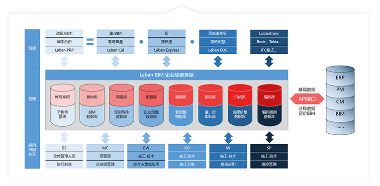17年的本地化研发与应用，鲁班BIM软件与系统十分符合中国的施工企业管理现状与项目管理特色，上手较快。软件中能自动集成各地清单定额，实现一模多算。符合国内工程设计规范、造价管理规范和工程量计算规则，并且可以根据当地计算规则生成工程量。可自定义计算规则，存为模板，并可在企业内部共享。
一次性建模，全员全过程应用，全面提升项目全过程精细化管理水平。利用鲁班BIM系统和实施团队，目前可实现8大阶段、38大项、106个应用点，并在不断开发延伸新的应用。的平台研发，如精装修BIM、铁路BIM等；其次将用于团队的建设，从研发、销售到BIM实施服务，打造精良的战斗团队；最后还将加大云端服务器的研发和部署投入，提升企业级云端平台的安全、运行速度与体验。
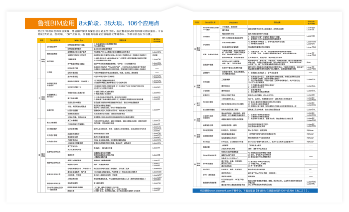鲁班软件十分重视研发，每年将收入的30%以上投入研发。目前，鲁班软件拥有了一支专业背景极强的管理研发团队，及时响应客户需求，完善系统和软件功能，建立了完善的自主研发和技术管理体系。
鲁班软件下设鲁班BIM研究院，由四位经验丰富的博士领衔。至2014年，鲁班BIM研究院承担多项各级BIM科研课题，在国内外期刊、会议上数十篇发表BIM研究论文与报告，其中SCI文章达6篇，影响因子之和达14.5，可以媲美国内研究BIM的高校。鲁班软件曾获上海市软件名企、上海市科技进步奖，被评为国家火炬基金项目、科技部创新基金资助项目、全国优秀软件、上海市优秀软件产品。
2015年底，晨晖资本、长江会基金领投，联合稼沃资本、筑+资本等多家机构共同向鲁班软件注资3亿人民币，意在加快中国BIM技术产业发展。这是业内公布的数额较大的一次BIM技术领域VC/PE投资。本轮融资将全部用于BIM技术领域的投入。除了原有BIM平台的深入研发，还将启动细分领域的BIM技术的平台研发，如精装修BIM、铁路BIM等；其次将用于团队的建设，从研发、销售到BIM实施服务，打造精良的战斗团队；最后还将加大云端服务器的研发和部署投入，提升企业级云端平台的安全、运行速度与体验。
鲁班软件拥有BIM实施经验丰富200余人的顾问队伍，建立了完善的BIM实施管理体系。经过400余个项目级、近百个企业级的BIM实施经验积累，摸索出了一套较为成熟的BIM实施方法论，包括BIM相关标准、流程与制度等，各项目实施过程中提交委托方各阶段成果报告共计60多份。 6.能落地：带教式驻场服务模式
作为BIM软件厂商，鲁班软件的BIM咨询实施服务更侧重“带教式”。鲁班工程顾问通过实地驻场的贴身指导，结合项目BIM实施，帮助企业建立自己的BIM团队、自己的BIM流程与相关制度，并把一整套BIM实施方法传递给企业，节省企业自己摸索的时间与精力，快速建立企业自己的BIM能力。鲁班BIM团队实施的众多的BIM服务项目获得信息化示范项目，多个协会的BIM大赛奖项，以及多个省市级示范项目。
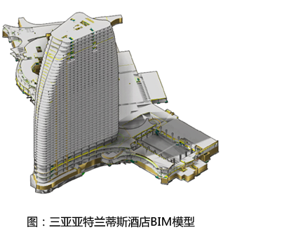作为BIM软件厂商，鲁班软件的BIM咨询实施服务更侧重“带教式”。鲁班工程顾问通过实地驻场的贴身指导，结合项目BIM实施，帮助企业建立自己的BIM团队、自己的BIM流程与相关制度，并把一整套BIM实施方法传递给企业，节省企业自己摸索的时间与精力，快速建立企业自己的BIM能力。鲁班BIM团队实施的众多的BIM服务项目获得信息化示范项目，多个协会的BIM大赛奖项，以及多个省市级示范项目。
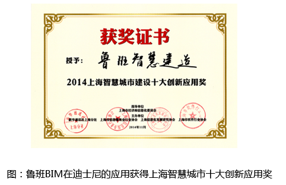鲁班BIM团队已成功实施了超过400个大型复杂项目，如迪士尼、上海中心、苏州中心、苏州现代传媒广场、金虹桥国际中心、珠海仁恒滨海中心等；鲁班BIM团队服务过的众多企业，BIM技术应用已成功从项目级应用进入企业级BIM系统平台搭建，如贵州建工、中建二局、中铁一局、中国五冶、中国二冶、中铁城建、苏中建设、南通二建、南通三建、龙信集团等企业全集团全面推广使用鲁班BIM技术。
系统可部署在企业自有的服务器中，大大增加了数据保密性。
鲁班秉承着开放的理念，与其它管理系统（如ERP、PM、FM系统）对接，共享工程基础数据。BIM系统产生的数据可通过数据接口提供给管理系统调用，不仅大幅减少数据输入的工作量而且确保数据输入的准确性。BIM系统中产生的数据（应发生的理论数据）与管理系统的数据（已发生的过程数据）进行对比，可实现项目及企业精细化管理。
鲁班与新中大、用友、易建、金蝶等管理软件厂商形成合作，为各家ERP系统提供基础数据，实现项目基础数据的及时性、准确性、对应性和可追溯性。
鲁班BIM建模端软件免费；系统平台成本低，一次部署，多项目多人协同应用；鲁班拥有成熟的实施体系，强大的顾问团队，通过项目试点实现知识转移，帮助企业建设BIM团队，实现自我应用。
鲁班软件始终专注于建筑业，将继续深耕建设工程领域，积极创新，开拓进取，为客户提供最优秀的BIM系统与服务，为客户创新互联网+的解决方案，为推进中国建筑业进入智慧建造时代贡献力量！
鲁班基础数据分析系统（LubanPDS）是一个以BIM技术为依托的工程成本数据平台。它创新性的将最前沿的BIM技术应用到了建筑行业的成本管理当中。只要将包含成本信息的BIM模型上传到系统服务器，系统就会自动对文件进行解析，同时将海量的成本数据进行分类和整理，形成一个多维度的、多层次的，包含三维图形的成本数据库。通过互联网技术，系统将不同的数据发送给不同的人。总经理可以看到项目资金使用该情况，项目经理可以看到造价指标信息，材料员可以查询下月材料使用量，不同的人各取所需，共同受益。从而对建筑企业的成本精细化管控和信息化建设产生重大作用。

鲁班管理驾驶舱（Luban Management Cockpit），LubanPDS系统的客户端之一，用于集团公司多项目集中管理、查看、统计和分析，以及单个项目不同阶段的多算对比，主要由集团总部管理人员应用。将工程信息模型汇总到企业总部，形成一个汇总的企业级项目基础数据库，企业不同岗位都可以进行数据的查询和分析。为总部管理和决策提供依据，为项目部的成本管理提供依据。
自动汇总分散在各项目中的工程模型，建立企业工程基础数据库；
自动拆分、统计各部门所需数据，为决策做依据；
自动分析工程人、材、机数量，形成多工程对比；
多工程审核分析，马上清楚工程是赚是赔。
 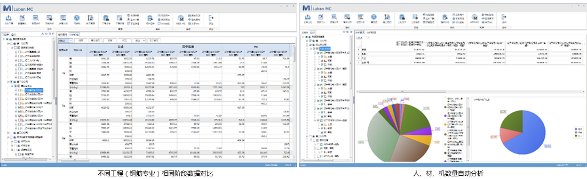
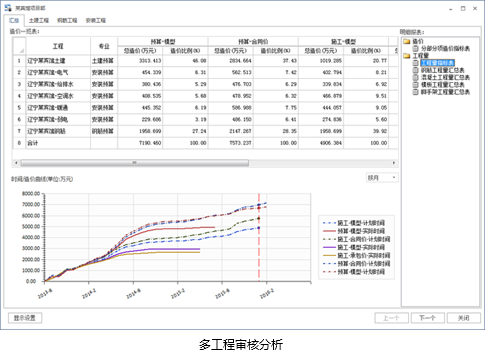
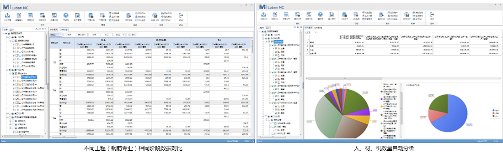
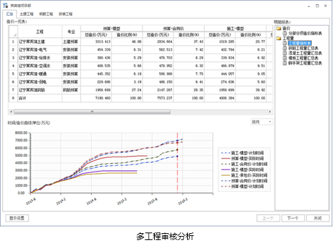
建立共享的数据平台，用于材料采购，计划审批、施工管理等，提高各部门间协同效率。
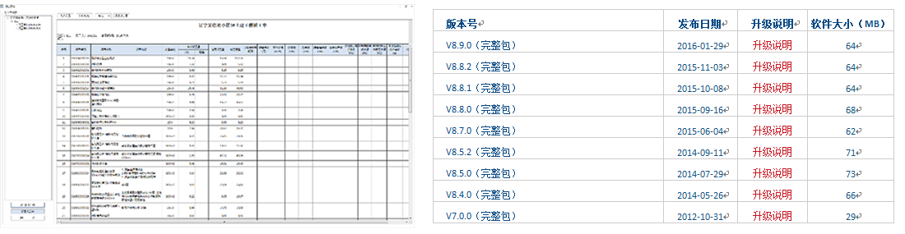 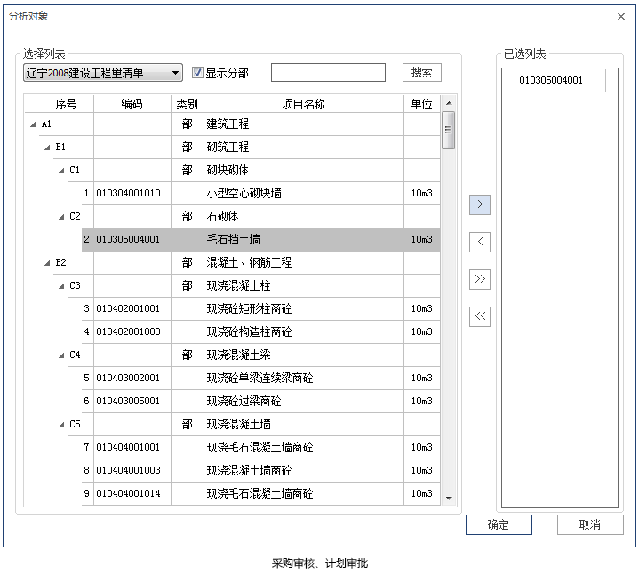鲁班BIM应用是鲁班软件2013年8月版推出的一款针对于建筑信息模型（BIM）的应用功能。
本次版本推出的BIM应用包括：IFC导入、分区施工、高大支模查找、骨架图应用、输出CAD图纸等15个应用。
 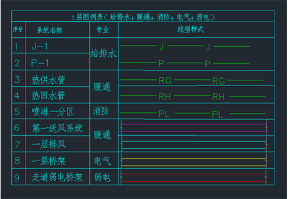
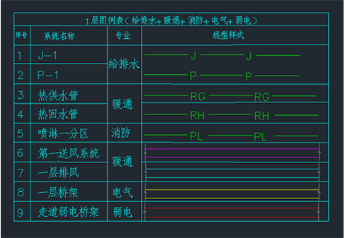